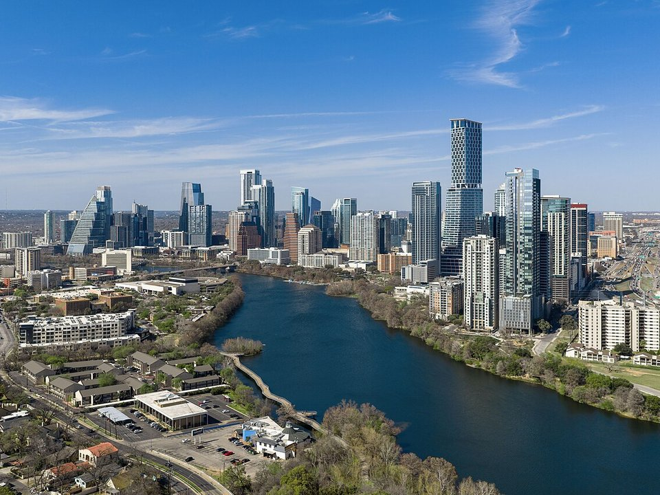

Downtown · Historic hotel
The Driskill
An 1886 cattle baron’s hotel on Sixth Street.
Official details for The DriskillLive music, barbecue and a spring-fed pool.
Austin is Texas’s capital and its liveliest weekend, with live music every night of the week, some of the best barbecue in the state and a cold, spring-fed swimming hole in the middle of town. Land at Austin-Bergstrom, stay at the 1886 Driskill or the Commodore Perry Estate, line up early at Franklin Barbecue, swim at Barton Springs, watch 1.5 million bats leave the Congress Avenue Bridge at dusk in summer, and end the night at the Continental Club.

In our plane it’s a short flight.
Where we’re staying Dinner Things to do The plan
I’ll handle the flight planning; you handle the fun planning!
Time illustration: direct distance at 150 KTAS plus 15 minutes for departure and arrival, matching the discovery page. Use ForeFlight for your actual flight plan.
Check the weekend weather at both ends → Flight category, your minimums and the crosswind on the best runway.
More in Aviation & getting around below. Crew cars change often: call the FBO before you go. How to have a rental car waiting at the FBO · Know something we missed? Tell us.
KAUS, Austin-Bergstrom International, is a towered Class C airport at 542 feet with runways of 12,250 and 9,000 feet, about 15 minutes from downtown.
Austin-Bergstrom International Airport, Austin, TX
Other FBOs: Signature Aviation (512-530-5451) and Million Air Austin (737-208-1400). Class C with heavy airline traffic; brief the procedures and expect a busy ramp during SXSW, ACL and Formula 1 weekends. No live fuel price is shown.
Texas flying: hot, bumpy summer afternoons with pop-up thunderstorms; spring severe weather (hail, tornadoes and squall lines) from March to June; gusty south winds; and low morning stratus that spreads inland from the Gulf. About 980 nm from Myrtle Beach: a long cross-country day with two fuel stops. Plan four or more nights, or break the trip with an overnight on the way.
Rates and availability need travel dates. Rates soar during SXSW, ACL and race weekends.
An 1886 cattle baron’s hotel on Sixth Street.
Official details for The DriskillAn Auberge hotel in a 1920s Italianate mansion and gardens.
Official details for Commodore Perry EstateHotels across Austin.
Visit Austin for More places to stayPrices and availability for your dates, through our partner Stay22. This is an affiliate link: we may earn a commission at no cost to you. The picks above are never paid.
Reserve weekend dinners.
Famous brisket; expect a line or order ahead.
Official details for Franklin BarbecueCreative sushi and small plates.
Official details for UchiInventive shared plates on South Lamar.
Official details for Odd DuckAn Austin Tex-Mex institution since 1952.
Official details for Matt’s El RanchoClassic fine dining in Clarksville since 1975.
Official details for Jeffrey’sSummer is hot; swim, then nap, then go out late.
This prototype links to the local visitor site. It does not yet match events to your travel dates.
Music, film and tech across the city.
SXSW for SXSWTwo weekends in Zilker Park.
ACL Festival for Austin City Limits Music FestivalBats emerge from the bridge at dusk.
Visit Austin for Congress Avenue batsCheck the local calendar when choosing a weekend, and confirm dates and tickets with the organizer.
A sample Austin weekend. This is a long flight; plan four or more nights. No bookings or availability confirmed.
Land at KAUS mid-morning.
Barbecue for lunch.
Barton Springs, then back to the airport.
Land at KAUS, subject to weather and your actual flight plan.
Swim at Barton Springs.
Dinner at Odd Duck, then the Continental Club.
Franklin Barbecue, early.
The Capitol and the LBJ Library.
Dinner at Uchi and the bats at dusk.
Breakfast tacos on South Congress.
Return the car and allow time at the FBO.
Texas afternoons bring heat, bumps and storms; leave in the morning.
The Capitol and LBJ Library.
South Congress.
Dinner at Uchi and live music.
This guide is part of a multi-stop flying trip. Set your dates and aircraft, then swap stops to make it your own.
These details make the difference between an appealing list and a usable getaway.
Hotel first; check the festival calendar.
About 980 nm from Myrtle Beach: a long day or two easy days.
June to September is very hot.
March to May and October to November.
Picks and links reviewed by WingAway Weekends. Hours, prices, menus and availability change often, so confirm directly with each place before booking. Spotted something out of date, or have a favorite we missed? Email us at hello@wingawayweekends.com.
WingAway Weekends helps you discover the destination. Use ForeFlight and current official aviation information for route, performance, weather, NOTAMs and preflight decisions. Flight planning and PIC responsibility stay with the pilot.